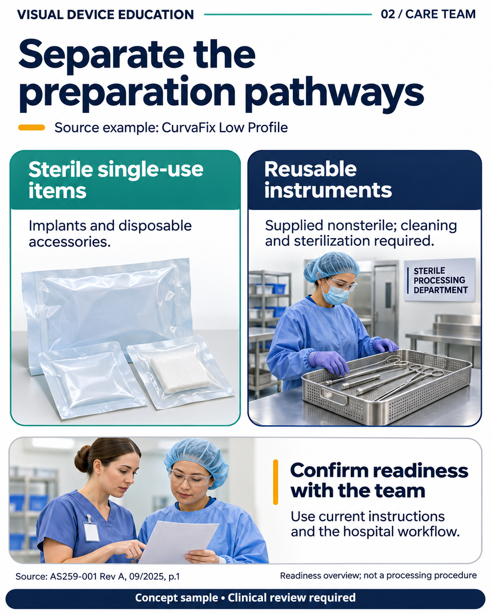
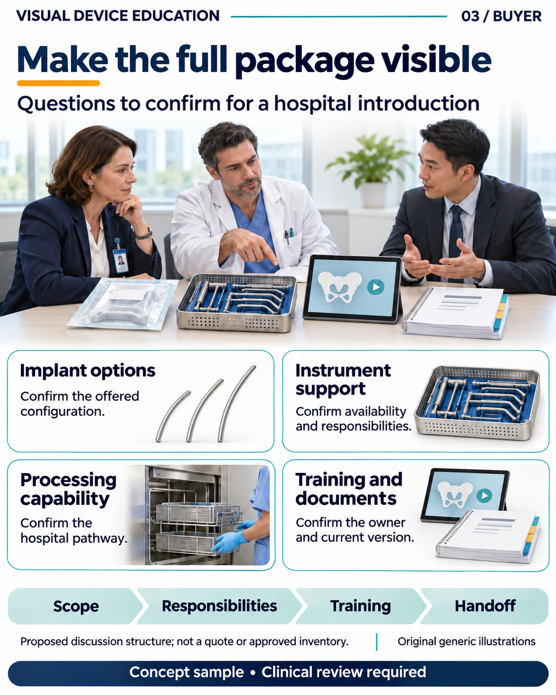

01
Surgeon education

Generic concept · Unreviewed
A visual structure for a defined technique or training topic. The manufacturer and a qualified clinician confirm the content before use.
Open full-size concept ↗MEDICAL-DEVICE VISUAL GUIDES
Surgeons, care teams and buyers need different explanations. Your team still has to keep every version accurate as product guidance changes.
We turn your current manuals, surgical techniques and installation procedures into a first source-linked draft for manufacturer review. After corrections and approval, we prepare versions for each intended audience and keep the source, version and changes with the work.
Discuss one source documentBring one current document and the audience you need to support.
THREE AUDIENCES
These original visual concepts show possible presentation styles. These illustrations are generic and generated with artificial intelligence. CurvaFix has not reviewed or approved these concepts.
They do not depict verified CurvaFix instruments, anatomy or an approved procedure. No manufacturer endorsement is implied.
Generic concept · Unreviewed
A visual structure for a defined technique or training topic. The manufacturer and a qualified clinician confirm the content before use.
Open full-size concept ↗
Generic concept · Unreviewed
A separate version can organize approved preparation, handoff and support information around the care team’s actual responsibilities.
Open full-size concept ↗
Generic concept · Unreviewed
A version for the buying team can connect confirmed product information with evaluation, supply, training and implementation questions.
Open full-size concept ↗A SOURCE-DERIVED FIRST DRAFT
Independent, unreviewed draft
This short text sequence is adapted from the manufacturer’s current surgical technique guide. Each proposed card links to the exact source page so a reviewer can check wording and context. These are proposed content segments. The manufacturer must verify the order, prerequisites and checks before any instructional use.
This extract is incomplete and has no approved device animation. It must be checked alongside the full technique guide and Instructions for Use, including all relevant warnings and prerequisites. It is not complete surgical training or patient-specific guidance.
Keep the Tissue Sleeve in its existing position.
Source: STG-001.C · printed p11 / PDF p12 ↗Take off the T-Handle Chuck.
Source: STG-001.C · printed p11 / PDF p12 ↗Take out the Steerable Guide Sleeve.
Source: STG-001.C · printed p11 / PDF p12 ↗The source groups the sleeve removals and describes separating the Drill Sleeve from the Tissue Sleeve with the handles.
Source: STG-001.C · printed p11 / PDF p12 ↗Advance the Cannulated Depth Gauge along the Steerable Guidewire or Drill Wire until the gauge sits in the entry hole.
Source: STG-001.C · printed p11 / PDF p12 ↗The full guide requires radiographic confirmation of the depth-gauge and wire position.
Source: STG-001.C · printed p11 / PDF p12 ↗Surgical Technique Guide, STG-001.C ↗
Pathway Measurement · printed page 11 / PDF page 12
Instructions for Use, AS259-001 Rev A, September 2025 ↗
Page 1 includes surgeon training and other warnings. The full document remains essential.
Manufacturer resource page ↗
Sources checked November 19, 2026. CurvaFix has not reviewed or approved this sample.
No manufacturer product figures are reproduced here. Correct device geometry and any animation require authorized assets and a separate technical review.
A REVIEWABLE WORKFLOW
Agree one topic, audience and intended use before production. Your designated reviewers decide whether the material is ready for its intended use.
Record the manufacturer document, market, product, version and exact pages.
Prepare a source-linked script, visual sequence or layout with open questions visible.
The manufacturer and qualified clinical reviewers check accuracy, context, role boundaries and proposed visuals.
Adapt approved material for surgeon education, nursing, buyers or installation teams as applicable. Each version receives its required review.
Keep approval records and change history. Recheck affected materials when the source changes.
Surgeon education explains an approved technique. Planning for an individual patient is a separate task requiring appropriate patient information, authorized data handling and qualified clinical review. This page contains no patient data or patient-specific plan.
START WITH ONE DOCUMENT
Choose one manual, surgical technique or installation procedure. We can agree the first draft, intended audience, review responsibilities and acceptance criteria before work begins.
These samples demonstrate draft preparation. No clinical validation, compliance determination or completed training video is claimed.